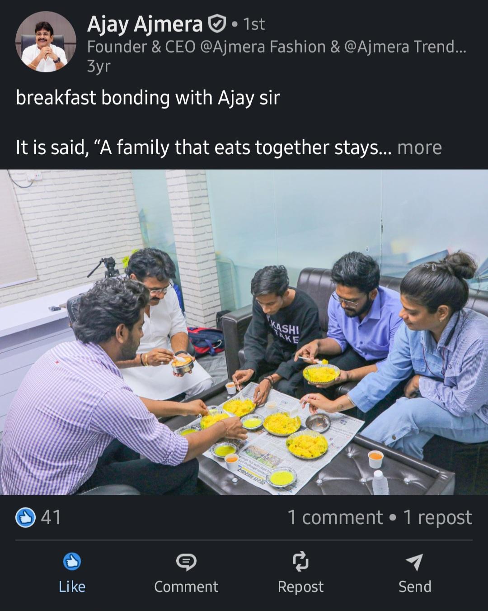
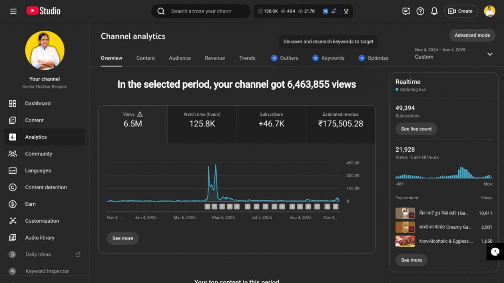
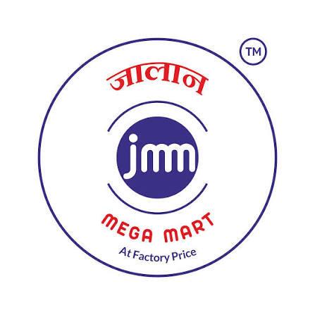
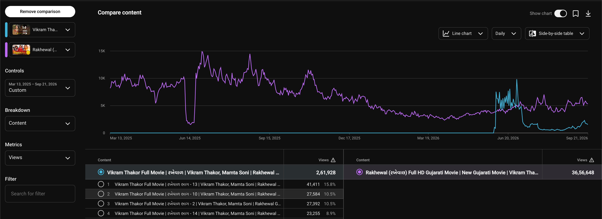
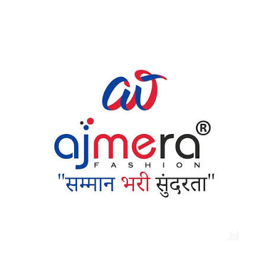
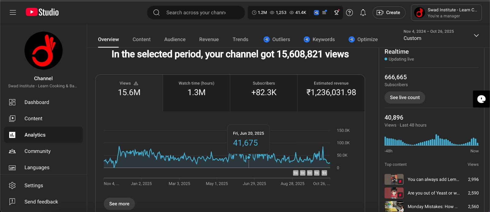
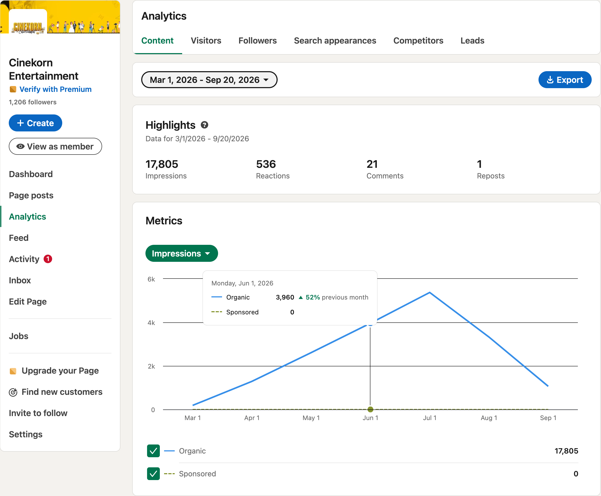
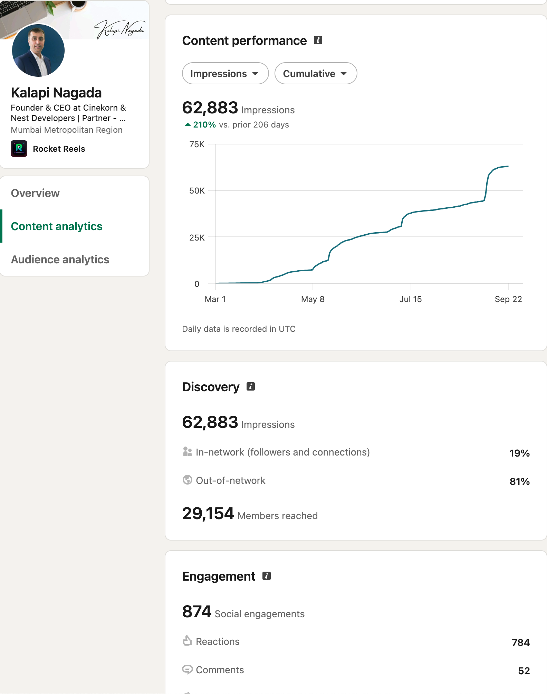
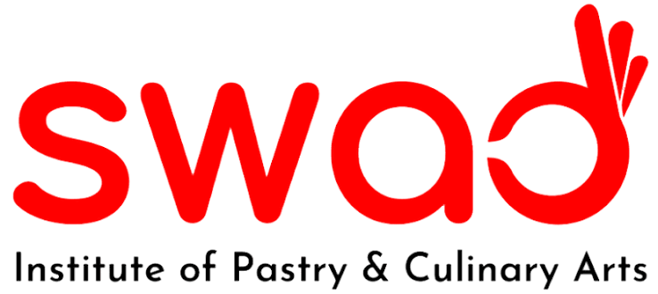

Creative Strategist for Media & Entertainment
I Turn Audience Insight Into Content And Distribution Decisions.
Strategy across film catalogues, founder-led content, and regional audiences.
Work across media, B2B textile, food, and retail, with each case separating the problem, decision, execution, and evidence.
Lifetime channel totals show portfolio scale. Case studies separate legacy catalogue performance from work published during my tenure.
Evidence needs context
Work across real brands, backed by evidence.
Selected evidence from the four company portfolios. Tap a slide to open its case hub.
 Cinekorn · Movies catalog
Cinekorn · Movies catalog

Ajmera · Founder content
Swad · Sneha channel
B2B marketing operationsJalan Mega Mart
Cinekorn · Rakhewal tenure
+20.3%Same-account growth
Swad · Institute growth
Cinekorn · Company LinkedIn
Cinekorn · Founder LinkedInProfessional journey
Four company portfolios. Official job titles and responsibilities, as documented.
Cinekorn Entertainment
Multi-account distribution across YouTube, Facebook, and LinkedIn. More

Swad Cooking Institute
Creator and institute channels, with editorial decisions shaped by audience response and each channel’s purpose. More
Jalan Mega Mart
Marketing operations, content planning, and promotion for a B2B textile business. More
Ajmera Fashion
Multilingual content systems and regional audience logic for B2B textile growth. More
How I work
A repeatable approach across media, retail, and food content.
Diagnose
Map the channel, audience, and what is already working. Find the constraint before adding more content.
Build
Set cadence, formats, and ownership so the system can run without constant reinvention.
Measure
Track the same accounts on fixed dates. Defend spend and growth with records, not claims.
Selected case studies
Examples of the decisions behind the work, from film distribution and founder-led content to regional audiences and B2B marketing.
Let us build something measurable
I work across content strategy, digital distribution, and audience development. If you are building something in media or entertainment, get in touch.